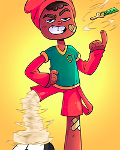
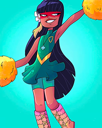
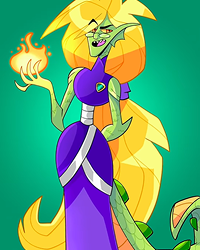

| Imagem | Nome | Descrição | Link |
|---|---|---|---|
|  | Futebol do Saci | Jogue futebol na floresta com a esperteza do Saci! | Jogar |
|  | Cantar com a Iara | Cante e descubra os mistérios das águas encantadas. | Jogar |
|  | Pique-esconde da Cuca | Fuja da Cuca antes que ela te pegue! | Jogar |
 |
História da Vitória Régia | Descubra os mistérios das águas encantadas do Rio Amazonas! | Jogar |